UTS PSD#
Preparation#
Load Library#
import pandas as pd
import numpy as np
import matplotlib.pyplot as plt
import seaborn as sns
import tensorflow as tf
from sklearn.preprocessing import MinMaxScaler
from sklearn.linear_model import LinearRegression
from sklearn.metrics import mean_squared_error, mean_absolute_percentage_error
from sklearn.ensemble import BaggingRegressor
Load Data#
df = pd.read_csv('https://raw.githubusercontent.com/Rieko00/psd/main/bmri_uni.csv')
df
| Tanggal | Pembukaan | |
|---|---|---|
| 0 | 11/10/2024 | 7025 |
| 1 | 10/10/2024 | 6925 |
| 2 | 09/10/2024 | 7075 |
| 3 | 08/10/2024 | 6825 |
| 4 | 07/10/2024 | 6925 |
| ... | ... | ... |
| 1398 | 08/01/2019 | 7425 |
| 1399 | 07/01/2019 | 7500 |
| 1400 | 04/01/2019 | 7175 |
| 1401 | 03/01/2019 | 7275 |
| 1402 | 02/01/2019 | 7400 |
1403 rows × 2 columns
df.info()
<class 'pandas.core.frame.DataFrame'>
RangeIndex: 1403 entries, 0 to 1402
Data columns (total 2 columns):
# Column Non-Null Count Dtype
--- ------ -------------- -----
0 Tanggal 1403 non-null object
1 Pembukaan 1403 non-null int64
dtypes: int64(1), object(1)
memory usage: 22.1+ KB
Change Dtypes#
df = df[['Tanggal', 'Pembukaan']]
df['Tanggal'] = pd.to_datetime(df['Tanggal'], dayfirst=True, format='%d/%m/%Y').dt.date
df.set_index('Tanggal', inplace=True)
df.index = pd.to_datetime(df.index)
df.index = pd.to_datetime(df.index)
df = df.sort_index()
Plot Data#
fig, ax1 = plt.subplots(figsize=(16, 8))
plt.title("Harga Saham BMRI", fontsize=24)
plt.ylabel('Harga dalam rupiah', fontsize=18)
plt.xlabel('Tahun', fontsize=18)
sns.set_palette(["#2419ef", "#19c4ef", "#EF5919"])
sns.lineplot(x='Tanggal', y='Pembukaan', data=df, linewidth=1.0, dashes=False, ax=ax1)
plt.show()
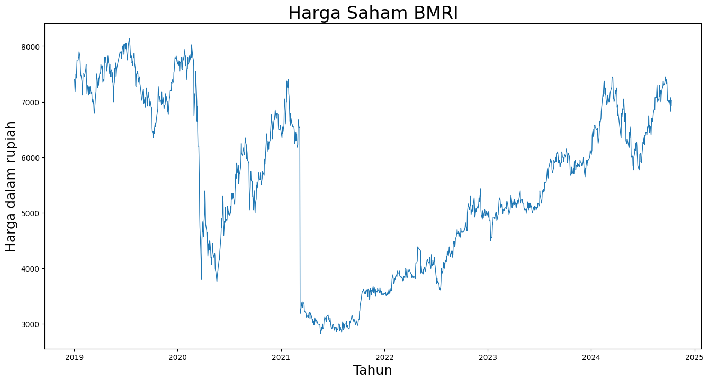
features = ['Pembukaan']
plt.figure(figsize=(10, 6))
sns.boxplot(data=df[features])
plt.ylabel('Values')
plt.show()
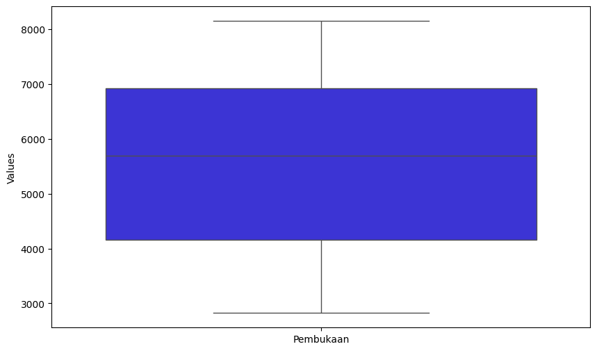
Prepocessing#
Data Normalization#
scaler = MinMaxScaler()
df['Pembukaan'] = scaler.fit_transform(df[['Pembukaan']])
fig, ax1 = plt.subplots(figsize=(16, 8))
plt.title("Harga Saham BMRI", fontsize=24)
plt.ylabel('Harga', fontsize=18)
plt.xlabel('Tahun', fontsize=18)
sns.set_palette(["#090364", "#1960EF", "#EF5919"])
sns.lineplot(x='Tanggal', y='Pembukaan', data=df, linewidth=1.0, dashes=False, ax=ax1)
plt.show()
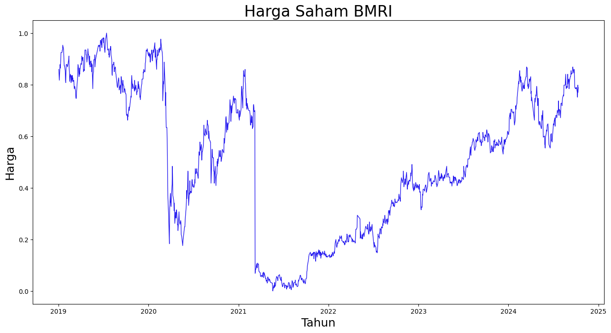
features = ['Pembukaan']
plt.figure(figsize=(10, 6))
sns.boxplot(data=df[features])
plt.ylabel('Values')
plt.show()
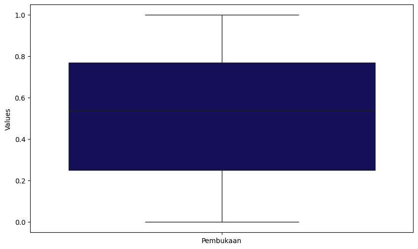
df
| Pembukaan | |
|---|---|
| Tanggal | |
| 2019-01-02 | 0.859155 |
| 2019-01-03 | 0.835681 |
| 2019-01-04 | 0.816901 |
| 2019-01-07 | 0.877934 |
| 2019-01-08 | 0.863850 |
| ... | ... |
| 2024-10-07 | 0.769953 |
| 2024-10-08 | 0.751174 |
| 2024-10-09 | 0.798122 |
| 2024-10-10 | 0.769953 |
| 2024-10-11 | 0.788732 |
1403 rows × 1 columns
Sliding Window#
def sliding_window(data, lag):
series = data['Pembukaan']
result = pd.DataFrame()
for l in lag:
result[f'open-{l}'] = series.shift(l)
result['open'] = series[l:]
result = result.dropna()
result.index = series.index[l:]
return result
windowed_data = sliding_window(df, [1, 2, 3])
windowed_data = windowed_data[['open', 'open-1', 'open-2', 'open-3']]
print(windowed_data)
open open-1 open-2 open-3
Tanggal
2019-01-07 0.877934 0.816901 0.835681 0.859155
2019-01-08 0.863850 0.877934 0.816901 0.835681
2019-01-09 0.877934 0.863850 0.877934 0.816901
2019-01-10 0.901408 0.877934 0.863850 0.877934
2019-01-11 0.924883 0.901408 0.877934 0.863850
... ... ... ... ...
2024-10-07 0.769953 0.788732 0.784038 0.788732
2024-10-08 0.751174 0.769953 0.788732 0.784038
2024-10-09 0.798122 0.751174 0.769953 0.788732
2024-10-10 0.769953 0.798122 0.751174 0.769953
2024-10-11 0.788732 0.769953 0.798122 0.751174
[1400 rows x 4 columns]
Split Data#
def split_data(data, target, train_size):
split_index = int(len(data) * train_size)
x_train = data[:split_index]
y_train = target[:split_index]
x_test = data[split_index:]
y_test = target[split_index:]
return x_train, y_train, x_test, y_test
input_df = windowed_data[['open-1', 'open-2', 'open-3']]
target_df = windowed_data[['open']]
x_train, y_train, x_test, y_test = split_data(input_df, target_df, 0.8)
print("X_train shape:", x_train.shape)
print("y_train shape:", y_train.shape)
print("X_test shape:", x_test.shape)
print("y_test shape:", y_test.shape)
X_train shape: (1120, 3)
y_train shape: (1120, 1)
X_test shape: (280, 3)
y_test shape: (280, 1)
Modelling#
Pengukuran Akurasi
\(MSE = mean((predicted - actual)^2)\)
\(RMSE = sqrt(mean((predicted - actual)^2))\)
\(MAPE = 100 * mean(abs((predicted - actual) / actual))\)
Bagging Linear Regression#
linear_model = LinearRegression()
linear_model.fit(x_train, y_train)
y_pred = linear_model.predict(x_test)
mse = mean_squared_error(y_test, y_pred)
rmse = np.sqrt(mse)
mape = mean_absolute_percentage_error(y_test, y_pred) * 100
print("Mean Squared Error (MSE):", mse)
print("Root Mean Squared Error (RMSE):", rmse)
print("Mean Absolute Percentage Error (MAPE):", mape,"%")
Mean Squared Error (MSE): 0.00045230041247564266
Root Mean Squared Error (RMSE): 0.021267355559063818
Mean Absolute Percentage Error (MAPE): 2.341169293979738 %
plt.figure(figsize=(10, 6))
plt.plot(y_test.index, scaler.inverse_transform(y_test.values.reshape(-1, 1)), label='Aktual', color='blue', marker='o', linestyle='-', markersize=4)
plt.plot(y_test.index, scaler.inverse_transform(y_pred.reshape(-1, 1)), label='Prediksi', color='orange', marker='x', linestyle='--', markersize=4)
plt.title('Perbandingan Nilai Aktual dan Prediksi Model Regresi Linear')
plt.xlabel('Tanggal')
plt.ylabel('Harga Open')
plt.grid()
plt.legend()
plt.xticks(rotation=45)
plt.show()
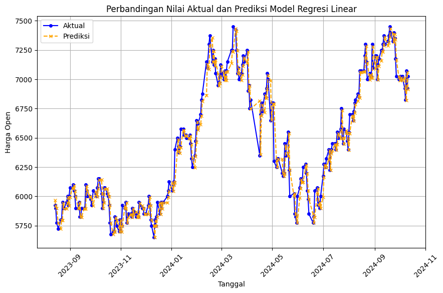
last_row = windowed_data.iloc[-1][['open-1', 'open-2', 'open-3']].values.reshape(1, -1)
predicted_value_normalized = linear_model.predict(last_row)
predicted_value = scaler.inverse_transform(predicted_value_normalized.reshape(-1, 1))
last_price = scaler.inverse_transform(df[['Pembukaan']].iloc[-1].values.reshape(-1, 1))
percentage_change = ((predicted_value[0][0] - last_price[0][0]) / last_price[0][0]) * 100
if percentage_change > 0:
change_sign = '+'
else:
change_sign = ''
print(f'Harga BMRI Hari ini: {last_price[0][0]}')
print(f'Prediksi Harga BMRI Besok: {predicted_value[0][0]} ({change_sign}{percentage_change:.2f}%)')
Harga BMRI Hari ini: 7025.0
Prediksi Harga BMRI Besok: 6916.001383650782 (-1.55%)
C:\Users\ariek\AppData\Local\Programs\Python\Python312\Lib\site-packages\sklearn\base.py:493: UserWarning: X does not have valid feature names, but LinearRegression was fitted with feature names
warnings.warn(
base_model = LinearRegression()
bagging_model = BaggingRegressor(estimator=base_model, n_estimators=10, bootstrap=True)
bagging_model.fit(x_train, y_train)
y_pred = bagging_model.predict(x_test)
mse = mean_squared_error(y_test, y_pred)
rmse = np.sqrt(mse)
mape = mean_absolute_percentage_error(y_test, y_pred)*100
print(f'Mean Squared Error: {mse}')
print(f'Root Mean Squared Error: {rmse}')
print("Mean Absolute Percentage Error (MAPE):", mape ,"%")
Mean Squared Error: 0.0004511737434236706
Root Mean Squared Error: 0.02124085081684984
Mean Absolute Percentage Error (MAPE): 2.3343879659722075 %
C:\Users\ariek\AppData\Local\Programs\Python\Python312\Lib\site-packages\sklearn\ensemble\_bagging.py:581: DataConversionWarning: A column-vector y was passed when a 1d array was expected. Please change the shape of y to (n_samples, ), for example using ravel().
return column_or_1d(y, warn=True)
plt.figure(figsize=(10, 6))
plt.plot(y_test.index, scaler.inverse_transform(y_test.values.reshape(-1, 1)), label='Aktual', color='blue', marker='o', linestyle='-', markersize=4)
plt.plot(y_test.index, scaler.inverse_transform(y_pred.reshape(-1, 1)), label='Prediksi', color='orange', marker='x', linestyle='--', markersize=4)
plt.title('Perbandingan Nilai Aktual dan Prediksi Model Regresi Linear Ensemble Bagging')
plt.xlabel('Tanggal')
plt.ylabel('Harga Open')
plt.grid()
plt.legend()
plt.xticks(rotation=45)
plt.show()
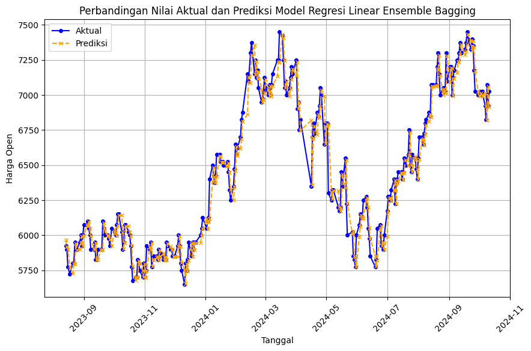
last_row = windowed_data.iloc[-1][['open-1', 'open-2', 'open-3']].values.reshape(1, -1)
predicted_value_normalized = bagging_model.predict(last_row)
predicted_value = scaler.inverse_transform(predicted_value_normalized.reshape(-1, 1))
last_price = scaler.inverse_transform(df[['Pembukaan']].iloc[-1].values.reshape(-1, 1))
percentage_change = ((predicted_value[0][0] - last_price[0][0]) / last_price[0][0]) * 100
if percentage_change > 0:
change_sign = '+'
else:
change_sign = ''
print(f'Harga BMRI Hari ini: {last_price[0][0]}')
print(f'Prediksi Harga BMRI Besok: {predicted_value[0][0]} ({change_sign}{percentage_change:.2f}%)')
Harga BMRI Hari ini: 7025.0
Prediksi Harga BMRI Besok: 6914.467513914591 (-1.57%)
C:\Users\ariek\AppData\Local\Programs\Python\Python312\Lib\site-packages\sklearn\base.py:493: UserWarning: X does not have valid feature names, but BaggingRegressor was fitted with feature names
warnings.warn(
Bagging SVM#
from sklearn.svm import SVR
from sklearn.ensemble import BaggingRegressor
svm_model = SVR()
svm_model.fit(x_train, y_train)
y_pred = svm_model.predict(x_test)
mse = mean_squared_error(y_test, y_pred)
rmse = np.sqrt(mse)
mape = mean_absolute_percentage_error(y_test, y_pred) * 100
print("Mean Squared Error (MSE):", mse)
print("Root Mean Squared Error (RMSE):", rmse)
print("Mean Absolute Percentage Error (MAPE):", mape,"%")
Mean Squared Error (MSE): 0.0010771866578538102
Root Mean Squared Error (RMSE): 0.032820521900996796
Mean Absolute Percentage Error (MAPE): 4.212439435355245 %
C:\Users\ariek\AppData\Local\Programs\Python\Python312\Lib\site-packages\sklearn\utils\validation.py:1339: DataConversionWarning: A column-vector y was passed when a 1d array was expected. Please change the shape of y to (n_samples, ), for example using ravel().
y = column_or_1d(y, warn=True)
plt.figure(figsize=(10, 6))
plt.plot(y_test.index, scaler.inverse_transform(y_test.values.reshape(-1, 1)), label='Aktual', color='blue', marker='o', linestyle='-', markersize=4)
plt.plot(y_test.index, scaler.inverse_transform(y_pred.reshape(-1, 1)), label='Prediksi', color='orange', marker='x', linestyle='--', markersize=4)
plt.title('Perbandingan Nilai Aktual dan Prediksi Model SVM')
plt.xlabel('Tanggal')
plt.ylabel('Harga Open')
plt.grid()
plt.legend()
plt.xticks(rotation=45)
plt.show()
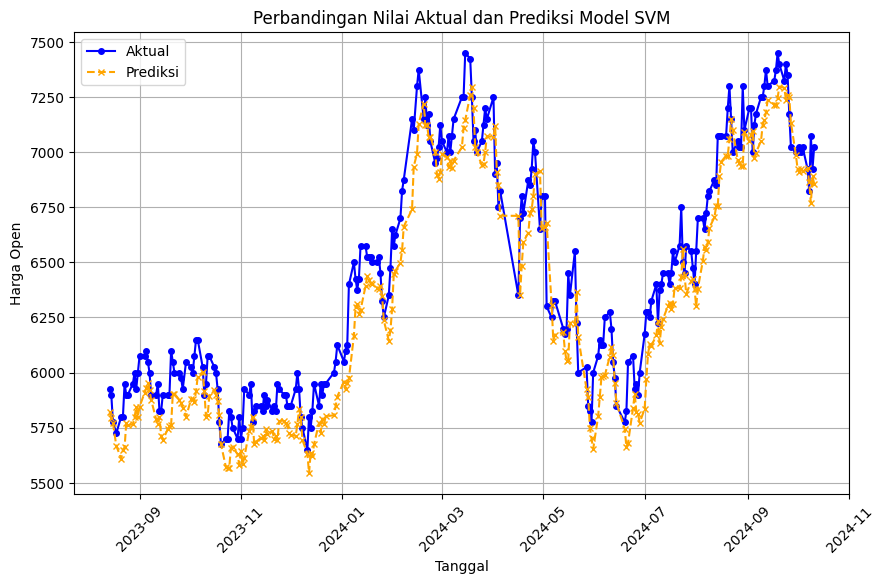
last_row = windowed_data.iloc[-1][['open-1', 'open-2', 'open-3']].values.reshape(1, -1)
predicted_value_normalized = svm_model.predict(last_row)
predicted_value = scaler.inverse_transform(predicted_value_normalized.reshape(-1, 1))
last_price = scaler.inverse_transform(df[['Pembukaan']].iloc[-1].values.reshape(-1, 1))
percentage_change = ((predicted_value[0][0] - last_price[0][0]) / last_price[0][0]) * 100
if percentage_change > 0:
change_sign = '+'
else:
change_sign = ''
print(f'Harga BMRI Hari ini: {last_price[0][0]}')
print(f'Prediksi Harga BMRI Besok: {predicted_value[0][0]} ({change_sign}{percentage_change:.2f}%)')
Harga BMRI Hari ini: 7025.0
Prediksi Harga BMRI Besok: 6856.750398555171 (-2.40%)
C:\Users\ariek\AppData\Local\Programs\Python\Python312\Lib\site-packages\sklearn\base.py:493: UserWarning: X does not have valid feature names, but SVR was fitted with feature names
warnings.warn(
base_model = SVR()
bagging_model = BaggingRegressor(estimator=base_model, n_estimators=50, bootstrap=True, random_state=42)
bagging_model.fit(x_train, y_train)
y_pred = bagging_model.predict(x_test)
mse = mean_squared_error(y_test, y_pred)
rmse = np.sqrt(mse)
mape = mean_absolute_percentage_error(y_test, y_pred)*100
print(f'Mean Squared Error: {mse}')
print(f'Root Mean Squared Error: {rmse}')
print("Mean Absolute Percentage Error (MAPE):", mape ,"%")
C:\Users\ariek\AppData\Local\Programs\Python\Python312\Lib\site-packages\sklearn\ensemble\_bagging.py:581: DataConversionWarning: A column-vector y was passed when a 1d array was expected. Please change the shape of y to (n_samples, ), for example using ravel().
return column_or_1d(y, warn=True)
Mean Squared Error: 0.001350347565019255
Root Mean Squared Error: 0.03674707559819223
Mean Absolute Percentage Error (MAPE): 4.826791117208925 %
plt.figure(figsize=(10, 6))
plt.plot(y_test.index, scaler.inverse_transform(y_test.values.reshape(-1, 1)), label='Aktual', color='blue', marker='o', linestyle='-', markersize=4)
plt.plot(y_test.index, scaler.inverse_transform(y_pred.reshape(-1, 1)), label='Prediksi', color='orange', marker='x', linestyle='--', markersize=4)
plt.title('Perbandingan Nilai Aktual dan Prediksi Model SVM Ensemble Bagging')
plt.xlabel('Tanggal')
plt.ylabel('Harga Open')
plt.grid()
plt.legend()
plt.xticks(rotation=45)
plt.show()
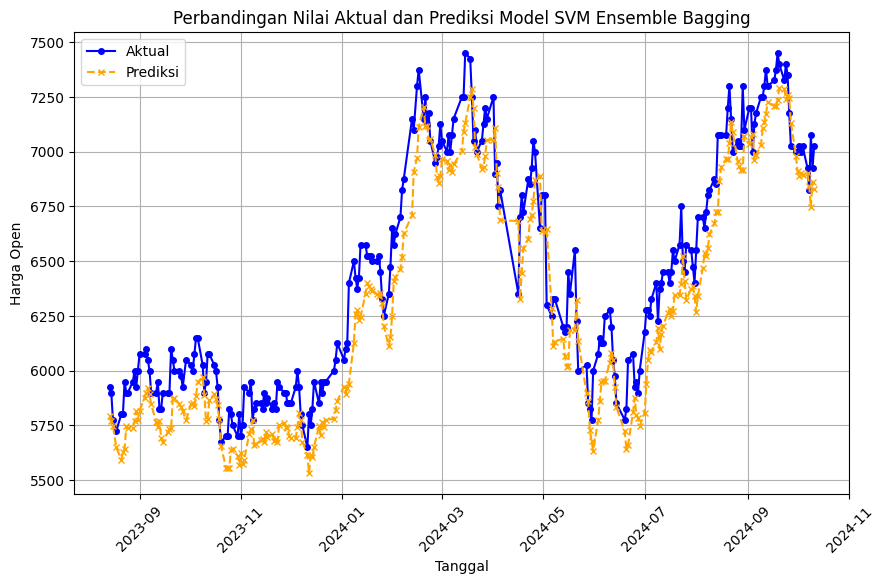
last_row = windowed_data.iloc[-1][['open-1', 'open-2', 'open-3']].values.reshape(1, -1)
predicted_value_normalized = bagging_model.predict(last_row)
predicted_value = scaler.inverse_transform(predicted_value_normalized.reshape(-1, 1))
last_price = scaler.inverse_transform(df[['Pembukaan']].iloc[-1].values.reshape(-1, 1))
percentage_change = ((predicted_value[0][0] - last_price[0][0]) / last_price[0][0]) * 100
if percentage_change > 0:
change_sign = '+'
else:
change_sign = ''
print(f'Harga BMRI Hari ini: {last_price[0][0]}')
print(f'Prediksi Harga BMRI Besok: {predicted_value[0][0]} ({change_sign}{percentage_change:.2f}%)')
Harga BMRI Hari ini: 7025.0
Prediksi Harga BMRI Besok: 6830.980449593076 (-2.76%)
C:\Users\ariek\AppData\Local\Programs\Python\Python312\Lib\site-packages\sklearn\base.py:493: UserWarning: X does not have valid feature names, but BaggingRegressor was fitted with feature names
warnings.warn(
Bagging Tree#
from sklearn.ensemble import BaggingRegressor
from sklearn.tree import DecisionTreeRegressor
tree_model = DecisionTreeRegressor()
tree_model.fit(x_train, y_train)
y_pred = tree_model.predict(x_test)
mse = mean_squared_error(y_test, y_pred)
rmse = np.sqrt(mse)
mape = mean_absolute_percentage_error(y_test, y_pred) * 100
print("Mean Squared Error (MSE):", mse)
print("Root Mean Squared Error (RMSE):", rmse)
print("Mean Absolute Percentage Error (MAPE):", mape,"%")
Mean Squared Error (MSE): 0.0012380228160827245
Root Mean Squared Error (RMSE): 0.03518554839820923
Mean Absolute Percentage Error (MAPE): 3.9904572665972795 %
plt.figure(figsize=(10, 6))
plt.plot(y_test.index, scaler.inverse_transform(y_test.values.reshape(-1, 1)), label='Aktual', color='blue', marker='o', linestyle='-', markersize=4)
plt.plot(y_test.index, scaler.inverse_transform(y_pred.reshape(-1, 1)), label='Prediksi', color='orange', marker='x', linestyle='--', markersize=4)
plt.title('Perbandingan Nilai Aktual dan Prediksi Model Tree')
plt.xlabel('Tanggal')
plt.ylabel('Harga Open')
plt.grid()
plt.legend()
plt.xticks(rotation=45)
plt.show()
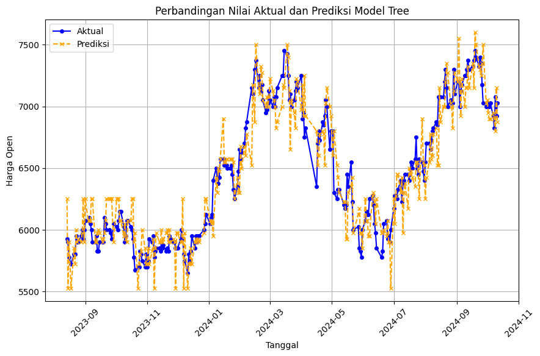
last_row = windowed_data.iloc[-1][['open-1', 'open-2', 'open-3']].values.reshape(1, -1)
predicted_value_normalized = tree_model.predict(last_row)
predicted_value = scaler.inverse_transform(predicted_value_normalized.reshape(-1, 1))
last_price = scaler.inverse_transform(df[['Pembukaan']].iloc[-1].values.reshape(-1, 1))
percentage_change = ((predicted_value[0][0] - last_price[0][0]) / last_price[0][0]) * 100
if percentage_change > 0:
change_sign = '+'
else:
change_sign = ''
print(f'Harga BMRI Hari ini: {last_price[0][0]}')
print(f'Prediksi Harga BMRI Besok: {predicted_value[0][0]} ({change_sign}{percentage_change:.2f}%)')
Harga BMRI Hari ini: 7025.0
Prediksi Harga BMRI Besok: 6875.0 (-2.14%)
C:\Users\ariek\AppData\Local\Programs\Python\Python312\Lib\site-packages\sklearn\base.py:493: UserWarning: X does not have valid feature names, but DecisionTreeRegressor was fitted with feature names
warnings.warn(
base_model = DecisionTreeRegressor()
bagging_model = BaggingRegressor(estimator=base_model, n_estimators=100, bootstrap=True, random_state=42)
bagging_model.fit(x_train, y_train)
y_pred = bagging_model.predict(x_test)
mse = mean_squared_error(y_test, y_pred)
rmse = np.sqrt(mse)
mape = mean_absolute_percentage_error(y_test, y_pred)*100
print(f'Mean Squared Error: {mse}')
print(f'Root Mean Squared Error: {rmse}')
print("Mean Absolute Percentage Error (MAPE):", mape ,"%")
C:\Users\ariek\AppData\Local\Programs\Python\Python312\Lib\site-packages\sklearn\ensemble\_bagging.py:581: DataConversionWarning: A column-vector y was passed when a 1d array was expected. Please change the shape of y to (n_samples, ), for example using ravel().
return column_or_1d(y, warn=True)
Mean Squared Error: 0.0006663130072579486
Root Mean Squared Error: 0.025813039481199198
Mean Absolute Percentage Error (MAPE): 2.904578194079493 %
plt.figure(figsize=(10, 6))
plt.plot(y_test.index, scaler.inverse_transform(y_test.values.reshape(-1, 1)), label='Aktual', color='blue', marker='o', linestyle='-', markersize=4)
plt.plot(y_test.index, scaler.inverse_transform(y_pred.reshape(-1, 1)), label='Prediksi', color='orange', marker='x', linestyle='--', markersize=4)
plt.title('Perbandingan Nilai Aktual dan Prediksi Model Tree ensemble Bagging')
plt.xlabel('Tanggal')
plt.ylabel('Harga Open')
plt.grid()
plt.legend()
plt.xticks(rotation=45)
plt.show()
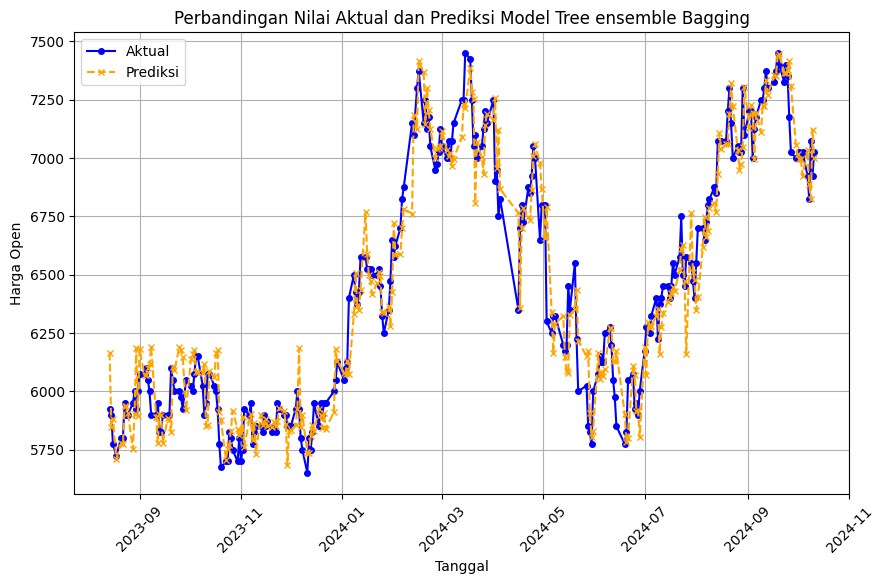
last_row = windowed_data.iloc[-1][['open-1', 'open-2', 'open-3']].values.reshape(1, -1)
predicted_value_normalized = bagging_model.predict(last_row)
predicted_value = scaler.inverse_transform(predicted_value_normalized.reshape(-1, 1))
last_price = scaler.inverse_transform(df[['Pembukaan']].iloc[-1].values.reshape(-1, 1))
percentage_change = ((predicted_value[0][0] - last_price[0][0]) / last_price[0][0]) * 100
if percentage_change > 0:
change_sign = '+'
else:
change_sign = ''
print(f'Harga BMRI Hari ini: {last_price[0][0]}')
print(f'Prediksi Harga BMRI Besok: {predicted_value[0][0]} ({change_sign}{percentage_change:.2f}%)')
Harga BMRI Hari ini: 7025.0
Prediksi Harga BMRI Besok: 6999.749999999999 (-0.36%)
C:\Users\ariek\AppData\Local\Programs\Python\Python312\Lib\site-packages\sklearn\base.py:493: UserWarning: X does not have valid feature names, but BaggingRegressor was fitted with feature names
warnings.warn(
Evaluasi#
Grid Search#
def rmse(y_true, y_pred):
return np.sqrt(mean_squared_error(y_true, y_pred))
def grid_search(input_df, target_df, splits, lags, estimators, bootstraps, max_samples):
best_rmse = float('inf')
best_params = None
graph = pd.DataFrame()
i = 0
for lag_value in lags:
lag = [i for i in range(1, lag_value+1)]
windowed_data = sliding_window(df, lag)
windowed_data = windowed_data[['open'] + [f'open-{i}' for i in range(1, lag_value+1)]]
input_df = windowed_data[[f'open-{i}' for i in range(1, lag_value+1)]]
target_df = windowed_data[['open']]
for split in splits:
x_train, y_train, x_test, y_test = split_data(input_df, target_df, split)
for estimator in estimators:
for bootstrap in bootstraps:
for max_sample in max_samples:
base_model = LinearRegression()
bagging_model = BaggingRegressor(estimator=base_model, n_estimators=estimator, bootstrap=bootstrap, max_samples=max_sample)
bagging_model.fit(x_train, y_train.values.ravel())
y_pred = bagging_model.predict(x_test)
i+=1
current_rmse = rmse(y_test, y_pred)
if current_rmse < best_rmse:
best_rmse = current_rmse
best_model = bagging_model
best_params = {'estimator': estimator, 'bootstrap': bootstrap, 'train_sample': split, 'max_sample': max_sample, 'lag': lag}
return best_params, best_rmse, best_model
lag = [3, 4, 5]
splits = [0.7, 0.75, 0.8, 0.85, 0.9]
estimators = [10, 20, 50, 100]
bootstraps = [True, False]
max_samples = [0.8, 0.9, 1.0]
best_params, best_rmse, best_model = grid_search(input_df, target_df, splits, lag , estimators, bootstraps, max_samples)
print(f'Best parameters: {best_params}')
print(f'Best RMSE: {best_rmse}')
print(f'Best Model: {best_model}')
Best parameters: {'estimator': 10, 'bootstrap': False, 'train_sample': 0.7, 'max_sample': 0.8, 'lag': [1, 2, 3]}
Best RMSE: 0.01932174134439971
Best Model: BaggingRegressor(bootstrap=False, estimator=LinearRegression(), max_samples=0.8)
for lag_value in best_params['lag']:
lag = [i for i in range(1, lag_value+1)]
windowed_data = sliding_window(df, lag)
windowed_data = windowed_data[['open'] + [f'open-{i}' for i in range(1, lag_value+1)]]
input_df = windowed_data[[f'open-{i}' for i in range(1, lag_value+1)]]
target_df = windowed_data[['open']]
x_train, y_train, x_test, y_test = split_data(input_df, target_df, best_params['train_sample'])
bagging_model = best_model
bagging_model.fit(x_train, y_train)
y_pred = bagging_model.predict(x_test)
mse = mean_squared_error(y_test, y_pred)
rmse = np.sqrt(mse)
mape = mean_absolute_percentage_error(y_test, y_pred)*100
print(f'Mean Squared Error: {mse}')
print(f'Root Mean Squared Error: {rmse}')
print("Mean Absolute Percentage Error (MAPE):", mape ,"%")
Mean Squared Error: 0.000376430057515061
Root Mean Squared Error: 0.01940180552203998
Mean Absolute Percentage Error (MAPE): 2.4207388568863357 %
C:\Users\ariek\AppData\Local\Programs\Python\Python312\Lib\site-packages\sklearn\ensemble\_bagging.py:581: DataConversionWarning: A column-vector y was passed when a 1d array was expected. Please change the shape of y to (n_samples, ), for example using ravel().
return column_or_1d(y, warn=True)
plt.figure(figsize=(10, 6))
plt.plot(y_test.index, scaler.inverse_transform(y_test.values.reshape(-1, 1)), label='Aktual', color='blue', marker='o', linestyle='-', markersize=4)
plt.plot(y_test.index, scaler.inverse_transform(y_pred.reshape(-1, 1)), label='Prediksi', color='orange', marker='x', linestyle='--', markersize=4)
plt.title('Perbandingan Nilai Aktual dan Prediksi Model Regresi Linear')
plt.xlabel('Tanggal')
plt.ylabel('Harga Open')
plt.grid()
plt.legend()
plt.xticks(rotation=45)
plt.show()
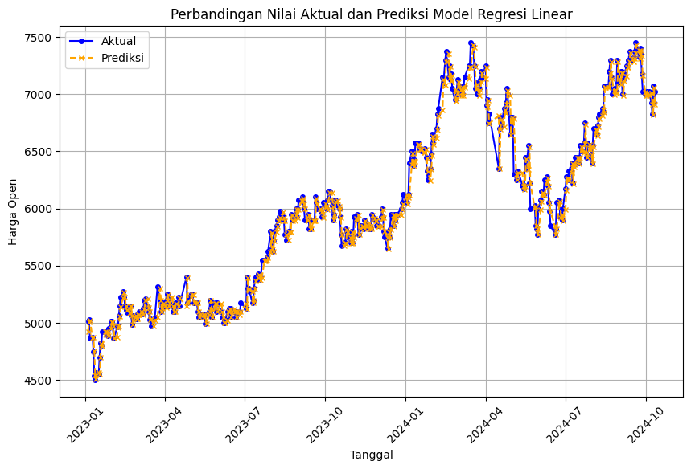
Testing Model#
# open_1 = int(input("Harga BMRI hari ini: "))
# open_2 = int(input("Harga BMRI 1 hari sebelumnya: "))
# open_3 = int(input("Harga BMRI 2 hari sebelumnya: "))
open_values = {}
for i in best_params['lag']:
open_values[f'open_{i}'] = int(input(f"Harga BMRI {i} hari sebelumnya: "))
last_row = np.array([
scaler.transform([[open_values[f'open_{i}']]]).flatten()[0] for i in best_params['lag']
]).reshape(1, -1)
last_row_df = pd.DataFrame(last_row, columns=[f'open-{i}' for i in best_params['lag']])
predicted_value_normalized = best_model.predict(last_row_df)
predicted_value = scaler.inverse_transform(predicted_value_normalized.reshape(-1, 1))
last_price = open_values['open_1']
percentage_change = ((predicted_value[0][0] - last_price) / last_price) * 100
change_sign = '+' if percentage_change > 0 else ''
formatted_predicted_value = f"{predicted_value[0][0]:,.2f}".replace(',', 'X').replace('.', ',').replace('X', '.')
formatted_last_price = f"{last_price:,.2f}".replace(',', 'X').replace('.', ',').replace('X', '.')
print(f'Harga BMRI Hari ini: Rp {formatted_last_price}')
print(f'Prediksi harga BMRI Besok: Rp {formatted_predicted_value} ({change_sign}{percentage_change:.2f}%)')
---------------------------------------------------------------------------
StdinNotImplementedError Traceback (most recent call last)
Cell In[35], line 7
5 open_values = {}
6 for i in best_params['lag']:
----> 7 open_values[f'open_{i}'] = int(input(f"Harga BMRI {i} hari sebelumnya: "))
9 last_row = np.array([
10 scaler.transform([[open_values[f'open_{i}']]]).flatten()[0] for i in best_params['lag']
11 ]).reshape(1, -1)
13 last_row_df = pd.DataFrame(last_row, columns=[f'open-{i}' for i in best_params['lag']])
File ~\AppData\Local\Programs\Python\Python312\Lib\site-packages\ipykernel\kernelbase.py:1281, in Kernel.raw_input(self, prompt)
1279 if not self._allow_stdin:
1280 msg = "raw_input was called, but this frontend does not support input requests."
-> 1281 raise StdinNotImplementedError(msg)
1282 return self._input_request(
1283 str(prompt),
1284 self._parent_ident["shell"],
1285 self.get_parent("shell"),
1286 password=False,
1287 )
StdinNotImplementedError: raw_input was called, but this frontend does not support input requests.